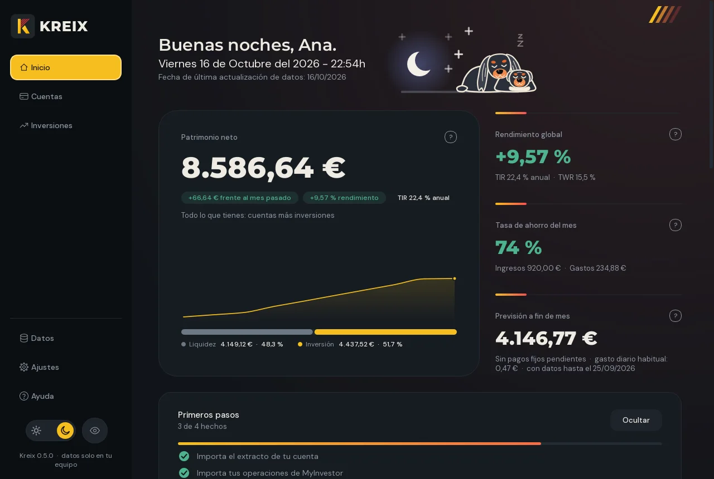
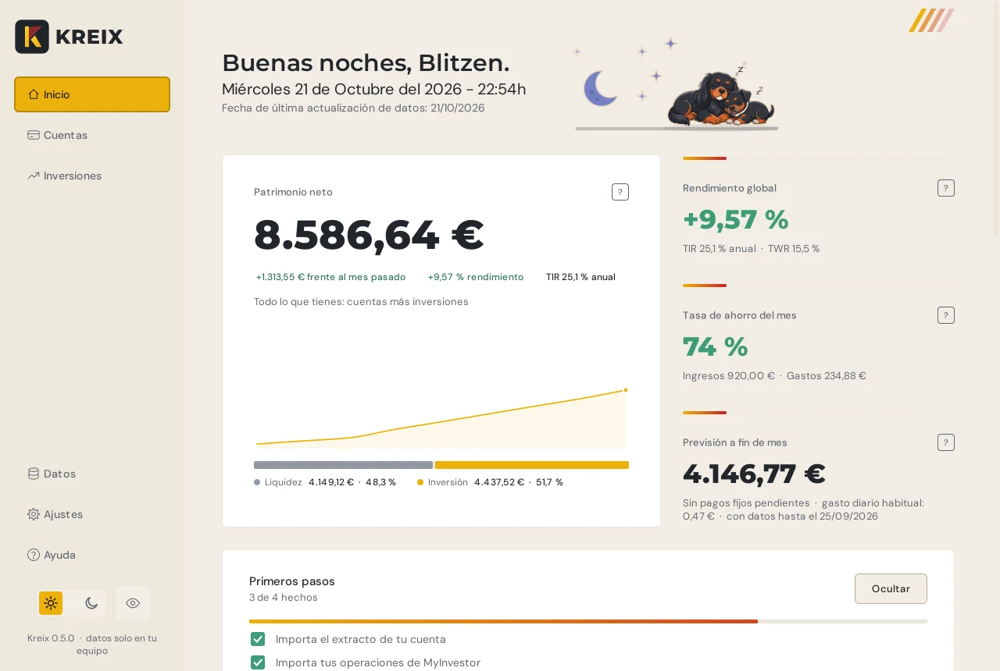
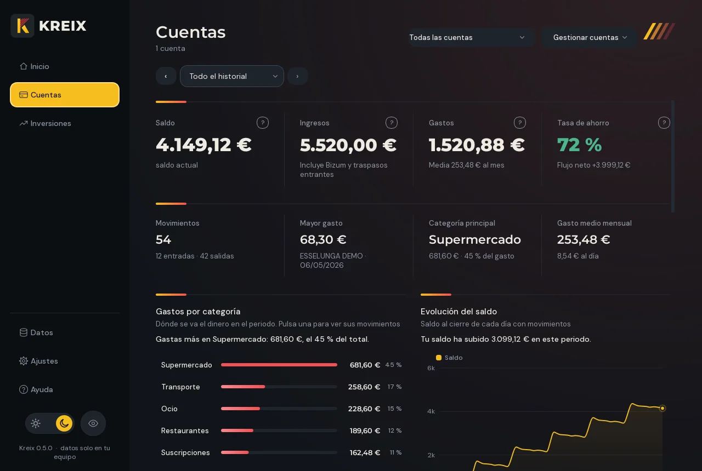
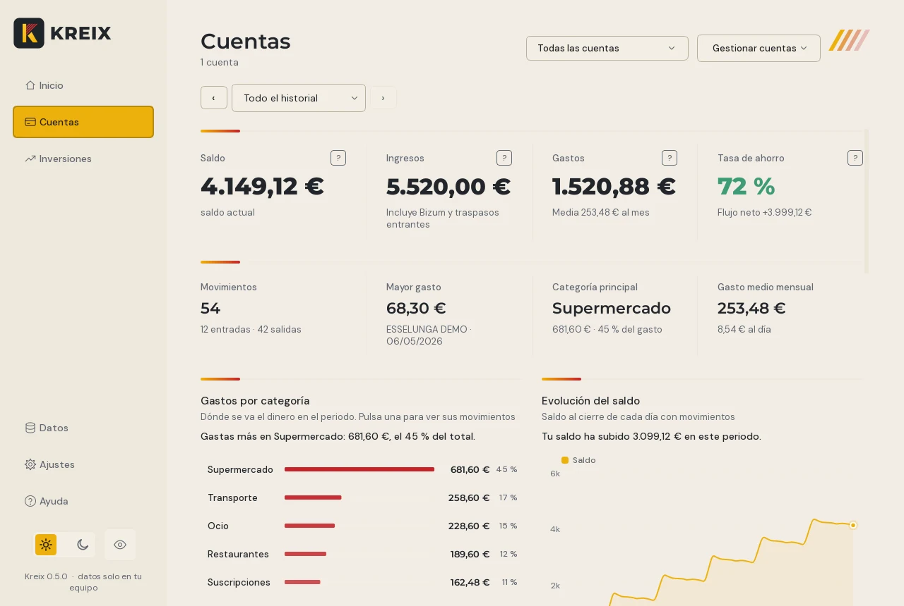
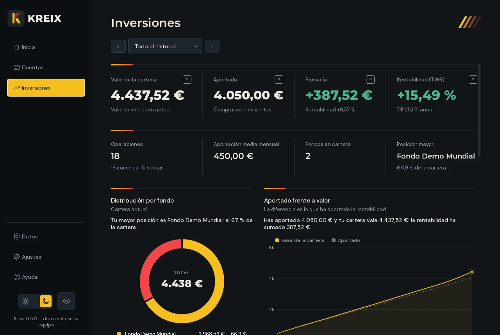
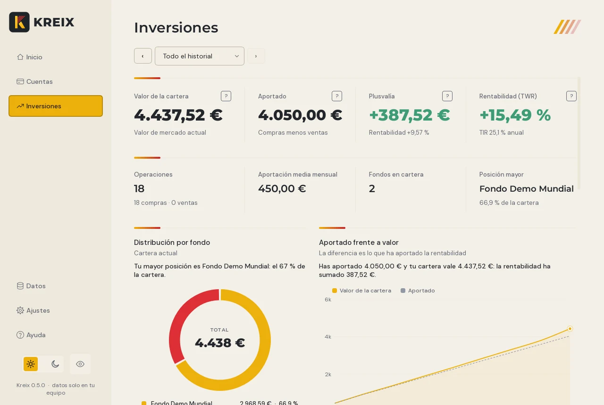
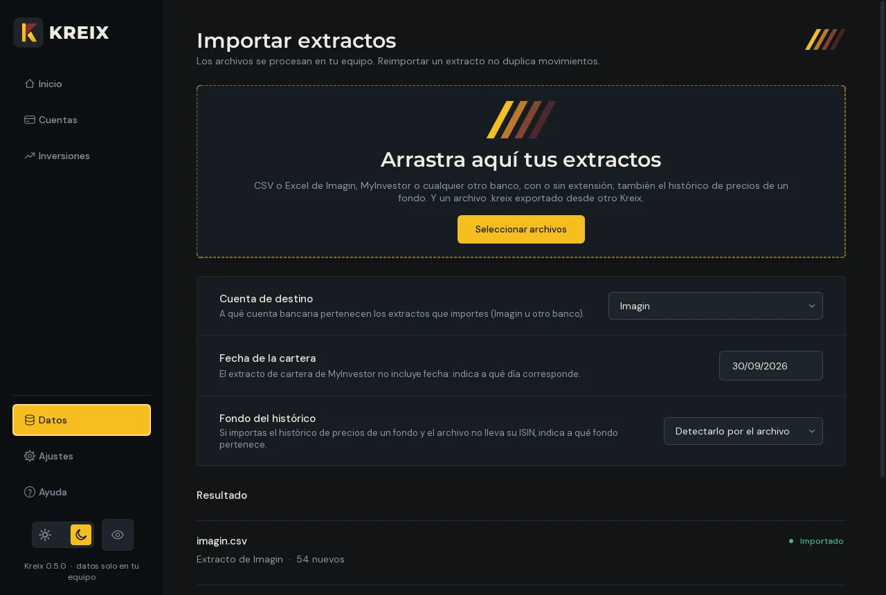
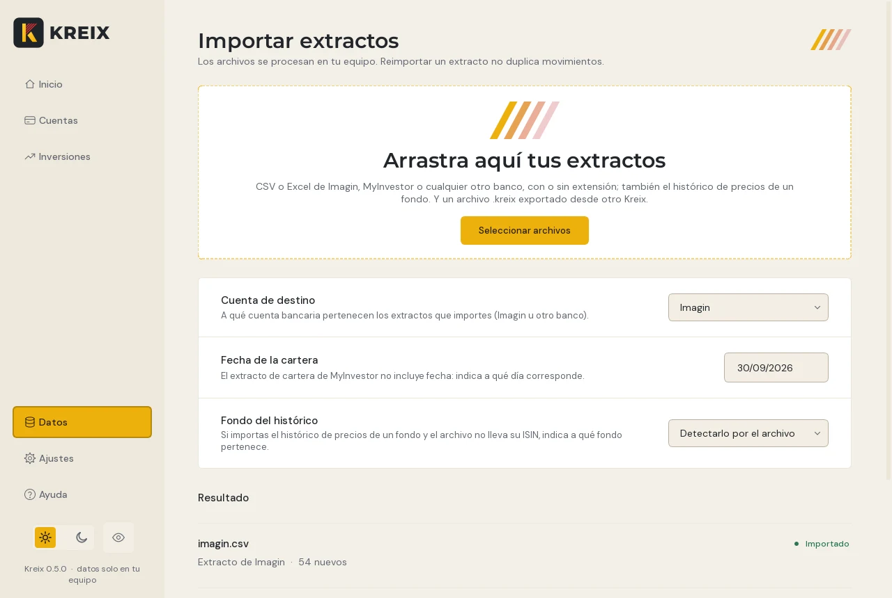
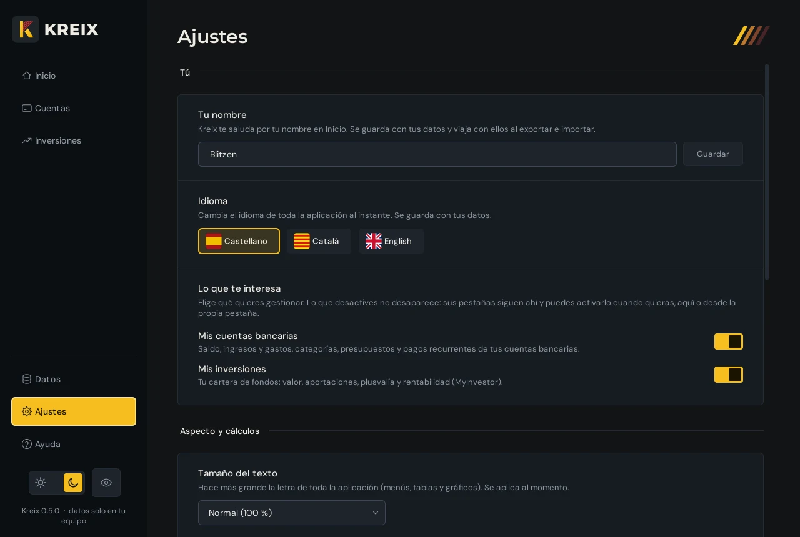
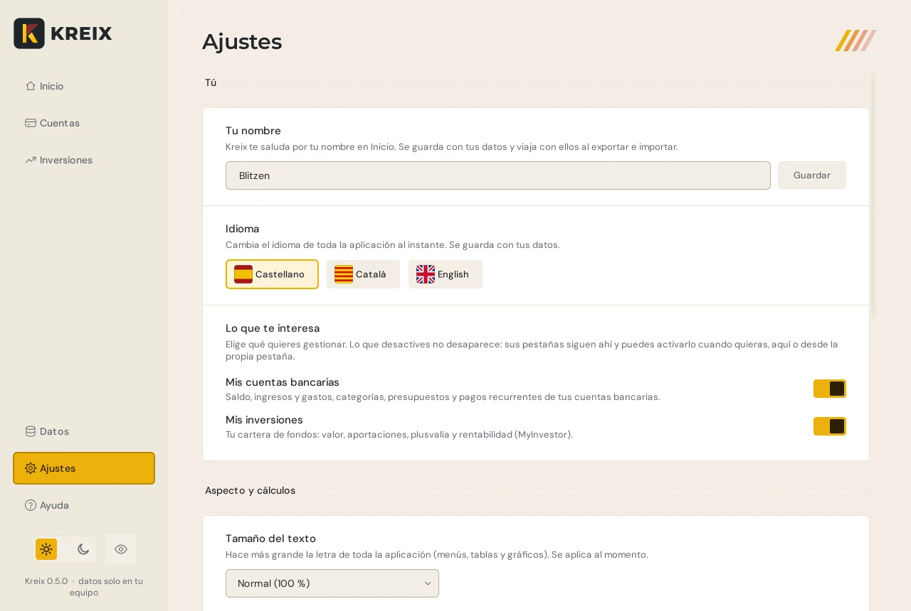

Kreix nunca te pide las claves de tu banco.
La app de finanzas personales para Windows que no te vigila: funciona sin conexión y guarda todo cifrado en tu ordenador.
Versión 0.5.0 para Windows 10 y 11 (64 bits). Si Windows te avisa al abrirlo es porque el instalador aún no está firmado: pulsa «Más información» y luego «Ejecutar de todas formas».
Sin tus claves del banco
Tú descargas el extracto y lo sueltas en Kreix. Kreix nunca entra en tu banca ni guarda tus claves.
100 % sin conexión
No se conecta a internet: ni para actualizarse ni para enviar nada. Sin cuenta, sin nube, sin anuncios y sin telemetría.
Tus datos, cifrados
Todo lo que guarda Kreix va cifrado con tu contraseña maestra. Sin ella, nadie puede leerlo, tampoco nosotros. Exportar también puede cifrarse.


Por qué Kreix
Cuatro decisiones de diseño, y ninguna es negociable.
No te vigila
Sin cuenta, sin nube y sin telemetría. Nadie sabe cuánto ganas ni en qué lo gastas, ni siquiera nosotros. Compruébalo: funciona igual sin internet.
Seguridad sin atajos
Todo lo que guarda va cifrado con tu contraseña maestra. Se descifra solo en memoria, se bloquea solo cuando no lo usas y, sin tu contraseña, no hay forma de abrirlo.
Tu dinero, a la vista
Patrimonio, ahorro del mes, previsión a fin de mes, presupuestos, pagos recurrentes e inversiones. Inicio lo resume todo en una sola pantalla.
Fácil desde el primer minuto
Sueltas el extracto de tu banco y ya está. Sin enlazar cuentas ni configurar nada. Si tu banco no está en la lista, Kreix te pregunta una vez qué columna es cada cosa y lo recuerda.
Empieza en tres pasos
Sin enlazar cuentas y sin dar acceso a nadie: solo un archivo que ya puedes descargar de tu banco.
-
Descarga el extracto
Desde la web o la app de tu banco, en CSV o Excel. Es el mismo archivo que bajarías para guardarlo.
-
Suéltalo en Kreix
Arrástralo a Importar. Kreix te enseña lo que ha leído y no guarda nada hasta que pulses Importar. Si repites un extracto, no duplica movimientos.
-
Mira tu dinero
Inicio resume tu patrimonio, tu ahorro del mes y lo que está por venir. Cuentas e Inversiones lo detallan.
La guía, pantalla a pantalla
Cada pestaña de la barra lateral, en pocas palabras. Los datos de las capturas son inventados.
Todo lo importante de un vistazo
- Tu patrimonio neto, la rentabilidad y la tasa de ahorro del mes.
- Una previsión de cuánto dinero tendrás a fin de mes, con tus pagos fijos.
- Próximos pagos, presupuestos y los movimientos que aún no tienen categoría.
Tus gastos, claros
- Gastos por categoría y evolución del saldo, de un mes o de todo el historial.
- Cambia la categoría de un movimiento con clic derecho, o crea tus propias reglas.
- Presupuestos por categoría y pagos recurrentes detectados.


Tu cartera de fondos
- Valor de la cartera, lo aportado, la plusvalía y la rentabilidad.
- Distribución por fondo y evolución frente a lo que has aportado.
- Se alimenta de las operaciones y la cartera que exportas de MyInvestor.


Soltar y revisar
- Arrastra los CSV o Excel de tu banco a la zona de importación.
- Ves qué se ha leído antes de guardar, y casi todo se puede deshacer.
- Si Kreix no reconoce el archivo, te pregunta qué columna es cada cosa y lo recuerda.


A tu manera
- Castellano, catalán o inglés, con cambio al instante.
- Tema claro u oscuro, tamaño del texto y cielo animado en Inicio.
- Contraseña, bloqueo automático y copias de seguridad cifradas.


Un ojo para cuando miran por encima del hombro
Con un clic, o con Ctrl+H, Kreix difumina todas las cantidades: en cifras, tablas y gráficos. Se nota que hay un número, pero no cuál. Pruébalo.
Categorías automáticas
Kreix clasifica tus gastos por sí mismo, y tus reglas mandan sobre las suyas.
Pagos recurrentes
Detecta suscripciones y recibos, y te dice cuándo toca el siguiente. Quitas los que ya no pagas.
Casi todo se puede deshacer
Cada cambio importante muestra un aviso con el botón Deshacer.
Tus datos no salen de tu ordenador
No hay que fiarse de una promesa: Kreix está hecho para que no tenga nada que enviar ni a dónde enviarlo.
-
Sin red
Kreix no incluye funciones de conexión a internet: ni para actualizarse, ni para enviar datos, ni para medir cómo lo usas.
-
Cifrado de verdad
Los datos se cifran con AES y una clave que sale de tu contraseña (PBKDF2-SHA256 con 600.000 iteraciones). Si alguien lo manipula, deja de abrirse.
-
Nada en claro en el disco
Al abrir Kreix, tus datos se descifran solo en memoria. No se escriben archivos temporales sin cifrar.
-
La contraseña es solo tuya
Nadie más la tiene. Por eso, si la olvidas, tampoco se puede recuperar nada: tendrías que empezar de cero.
Compruébalo tú
- Desconecta el wifi o el cable de red.
- Abre Kreix y úsalo con normalidad: importa, mira tus gráficos, cambia categorías. Todo funciona igual, porque nunca ha necesitado conexión.
Para más garantías, crea en el Firewall de Windows una regla de salida que bloquee Kreix y comprueba que sigue funcionando.
Lo que conviene saber
El archivo que crea Exportar (.kreix) puede cifrarse con tu contraseña, pero no es obligatorio. Si no lo cifras, guárdalo en un sitio seguro. Y apunta tu contraseña maestra en un lugar seguro: si la pierdes, no hay forma de recuperar tus datos.
Funciona con tu banco
Kreix lee CSV y Excel (.xlsx y el antiguo .xls). Reconoce estos formatos por sus columnas habituales.
- Imagin
- MyInvestor
- CaixaBank
- Santander
- Revolut
- Trade Republic
- Cualquier otro
Si Kreix no reconoce un archivo, te enseña sus primeras filas y te pregunta qué columna es la fecha, el concepto y el importe. Lo recuerda para la próxima vez. Los formatos de CaixaBank, Santander, Revolut y Trade Republic están incluidos, pero todavía en pruebas.
Preguntas frecuentes
¿Kreix necesita mis claves o acceso a mi banco?
No, nunca. Kreix no se conecta a tu banco. Trabaja con los extractos que descargas tú.
¿Se conecta a internet?
No. Funciona exactamente igual sin conexión, y no incluye nada para enviar información fuera de tu ordenador.
¿Dónde se guardan mis datos?
En un archivo cifrado dentro de tu carpeta de datos de aplicación (en Windows, %APPDATA%\Kreix). Solo se descifran en memoria mientras Kreix está abierto.
¿Qué pasa si olvido la contraseña?
No se puede recuperar: no existe ninguna llave de repuesto, y por eso nadie más puede leer tus datos. Podrás empezar de cero con una contraseña nueva. Guarda copias de seguridad y apunta la contraseña en un sitio seguro.
¿Qué pasa si importo dos veces el mismo extracto?
Nada: Kreix reconoce los movimientos que ya tiene y no los duplica.
¿Puedo llevarme mis datos a otro ordenador?
Sí. Exportar crea un archivo .kreix que sueltas en Importar en el otro equipo. Puedes cifrarlo con tu contraseña. Importarlo reemplaza los datos que hubiera allí.
¿Puedo deshacer un cambio?
Casi todos los cambios importantes muestran un aviso con el botón Deshacer: importar, cambiar categorías, crear reglas, presupuestos y borrados.
¿En qué idiomas está?
Castellano, catalán e inglés. Se elige la primera vez que lo abres y se cambia cuando quieras en Ajustes.
¿Funciona en Mac o en el móvil?
Por ahora, solo en Windows. Una versión para el móvil está en estudio.
¿Cómo lo instalo?
Descarga el instalador y ábrelo. No pide permisos de administrador y crea un acceso directo en Inicio y en el escritorio. Como el instalador aún no está firmado, Windows puede avisarte la primera vez: pulsa «Más información» y «Ejecutar de todas formas».
Tu dinero, tu ordenador, tus reglas.
Kreix para Windows ya se puede descargar. Esta página seguirá siendo la guía. Sin cuenta, sin registro y sin conexión.
Descargar para Windows